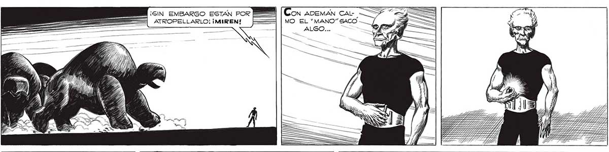
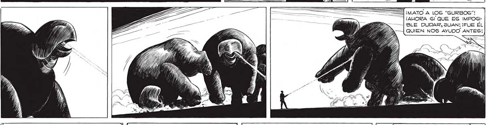
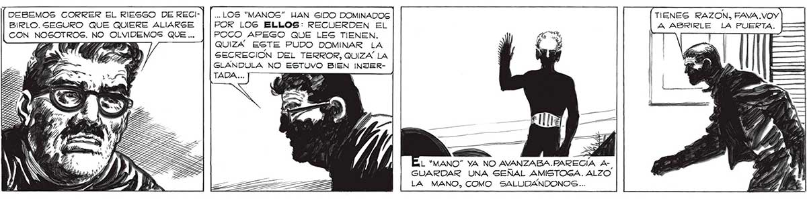

¡SIN EMBARGO ESTAN POR MBR [Con ADEMÁN CAL- 309 ATROPELLARLO! ¡MIREN! ===| | MO EL “MANO” SACO o ALGO... | ¡MATO A LOS “GURBOS”! ¡AHORA Gl QUE ES IMPOGI| BLE DUDAR, JUAN! ¡FUE ÉL QUIEN NOS AYUDO ANTES!) TIENES RAZON, FAVA .VOY DEBEMOS CORRER EL RIESGO DE RECI- .. LOS "MANOG” HAN SIDO DOMINADOS A ABRIRLE LA PUERTA. BIRLO. SEGURO QUE QUIERE ALIARSE POR LOS ELLOS: RECUERDEN EL CON NOSOTROS. NO OLVIDEMOS QUE ... POCO APEGO QUE LES TIENEN. z GD; QUIZA ESTE PUDO DOMINAR LA | MV y) SECRECION DEL TERROR, QUIZA LA w “e GLANDULA NO ESTUVO BIEN INJERTADA... Do." L “MANO” YA NO AVANZABA.RARECÍA AGUARDAR UNA SEÑAL AMISTOGA. ALZO LA MANO, COMO SALUDANDONOSG...


